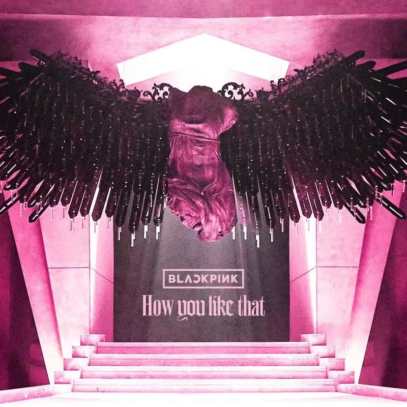

Lyric
词：TEDDY/Danny Chung
曲：TEDDY/R.Tee/24
编曲：R.Tee/24
보란 듯이 무너졌어
바닥을 뚫고 저 지하까지
옷 끝자락 잡겠다고
저 높이 두 손을 뻗어봐도
다시 캄캄한 이곳에 light up the sky
네 두 눈을 보며 I'll kiss you goodbye
실컷 비웃어라 꼴좋으니까
이제 너희 하나 둘 셋
Ha how you like that
You gon' like that that that that that
How you like that
How you like that that that that that
Now look at you now look at me
Look at you now look at me
Look at you now look at me
How you like that
Now look at you now look at me
Look at you now look at me
Look at you now look at me
How you like that
Your girl need it all and that's a hundred
백 개 중에 백 내 몫을 원해
Karma come and get some
딱하지만 어쩔 수 없잖아
What's up I'm right back
방아쇠를 cock back
Plain Jane get hijacked
Don't like me
Then tell me how you like that like that
더 캄캄한 이곳에 shine like the stars
그 미소를 띠며 I'll kiss you goodbye
실컷 비웃어라 꼴좋으니까
이제 너희 하나 둘 셋
Ha how you like that
You gon' like that that that that that
How you like that
How you like that that that that that
Now look at you now look at me
Look at you now look at me
Look at you now look at me
How you like that
Now look at you now look at me
Look at you now look at me
Look at you now look at me
How you like that
날개 잃은 채로 추락했던 날
어두운 나날 속에 갇혀 있던 날
그때쯤에 넌 날 끝내야 했어
Look up in the sky it's a bird it's a plane
Bring out your boss bish
BLACKPINK
How you like that
You gon' like that
How you like that
How You Like That
Singer: BLACKPINK publish time: 2020-06-26
language：Korean album:The album